한 작업실에서 조작과 집기를 선택합니다
기존 작업실에 고정된 ROS 집기 작업과 보존 기록 재생을 연결했습니다.
관절·TCP 조작과 집기·운반·놓기를 같은 작업 선택에서 고릅니다. 작업에 맞는 3D 모델과 진행 상태를 표시하고, 현재 실행을 대상으로 취소합니다. 일반 조작과 집기의 ROS 도메인·소유 프로세스는 분리하며, 실행·승인·기록이 남아 있으면 다른 작업으로 전환하지 않습니다.
새 통합 진입점 8933관절·TCP · 고정 ROS 집기
같은 3D와 작업 패널모델·실행·선택 식별자 대조
작업실 안의 기록 분석보존 이미지와 자세의 공통 시간축
이전 여섯 화면 보존11:25 조사와 영상의 원본 유지
시점이 다른 자료를 구분합니다. 기존 여섯 화면의 목록·영상·기능표는 11:25 조사 기록입니다. 새 8933의 통합 기능을 당시부터 지원한 것으로 바꾸지 않습니다. 포트 번호는 개발 버전이 아니며, 아래 주소는 촬영 호스트의 로컬 운영 주소입니다.
집기의 영상·3D·작업 단계를 함께 기록합니다
같은 집기 실행의 RGB 입력과 native 3D 자세, 작업 이벤트를 v2 기록으로 저장하고 공통 위치에서 확인합니다.
작업실의 기록 분석에서 실행 중인 집기 작업의 기록을 시작합니다. 이미지와 자세를 기다리는 동안은 작업 이벤트 기록 중과 입력 대기 안내를 표시하고, 두 입력이 준비되면 기록을 이어 갑니다. 실행이 끝나면 기록도 자동으로 마칩니다. 작업의 성공·취소와 기록 저장 결과는 따로 표시합니다.
실행에 묶인 입력
시작 설정에 등록한 집기 도메인의 RGB8 토픽 하나를 받습니다. 작업 선택·실행 세대·표시 모델·입력 등록을 대조하며, 이전 일반 조작 화면의 이미지와 늦은 응답을 새 집기에 적용하지 않습니다.
이벤트에서 기록 탐색
native 자세와 연결된 이벤트를 누르면 같은 기록 위치의 이미지와 3D를 확인합니다. 시작 전·정지 후·종료 뒤의 연결되지 않은 이벤트는 별도 목록에 표시합니다. 이미지와 자세가 모두 없는 기록에서는 재생 조작을 비활성화합니다.
실제 ROS·HTTP 세 조건
FR5·검증용 평행 그리퍼·블록에서 정상, native 실행 전 취소, 운반 중 취소를 순차 검증했습니다. 세 조건 모두 소유 프로세스의 정리를 확인하고 기록·입력 원본을 파일 크기와 SHA256으로 대조했습니다. 재생 검사에서 로봇 명령은 0개였습니다. 아래 수치는 소스 ec21566의 결과입니다.
| 조건 | native 결과 | 3D 자세 | RGB 이미지 | 이벤트 | 재생 자료 |
|---|---|---|---|---|---|
| 정상 | 성공 | 207개 | 85개 | 33개 | 이미지·3D·이벤트 |
| 시작 전 취소 | 취소 | 0개 | 0개 | 5개 | 이벤트 목록 |
| 운반 중 취소 | 취소 | 119개 | 46개 | 23개 | 이미지·3D·이벤트 |
정상과 운반 중 취소에서는 실제로 관측한 영상 누락 구간을 각각 1개 확인했습니다. 시작 전 취소는 native를 실행하지 않고 이벤트만 보존한 조건입니다. 같은 소스의 단위 검사 1,543개 중 1,542개 통과·1개 제외, JavaScript 299개와 모델 91개, 패키지 빌드·설치 import 검사를 통과했습니다.
원래 시각과 표본의 의미를 보존합니다. native 시각은 MuJoCo mjData.time을 나노초로 반올림한 값이며, 이미지 시각은 ROS 헤더의 정수 초·나노초입니다. 이벤트의 발생·수신 monotonic 시각도 따로 저장합니다. 같은 실행으로 연결한 관측이며 정확히 같은 물리 적분 단계의 동시 관측 여부는 추가 검증이 필요합니다. 3D 기록은 부모 프로세스가 받아들인 최신 IPC 표본을 사용하며, 원천 순번 누락과 대기열에서 제외한 수를 나누어 기록합니다.
이번 영상 입력은 64 × 48 진단 RGB8 패턴입니다. 시뮬레이션 카메라 렌더 입력과 실제 카메라 보정·하드웨어 동기화, 다른 센서·물체·그리퍼 및 장시간 부하 평가는 후속입니다. 과거 약 45초 종료 지연의 원인과 찾지 못한 동기 기록 원본 두 건은 계속 열린 항목입니다.
PC·좁은 화면의 기록 재생
화면 수정 소스 9c3a647에서 PC 1280 × 720과 브라우저 390 × 844 배치를 확인했습니다. 독립 화면의 재생·일시 정지·2배속·이벤트 탐색, 작업실 안의 기록 시작·저장·재생, v1 재생과 이벤트만 있는 v2 기록을 검수했습니다. 관절 상태를 주기적으로 갱신한 뒤에도 이벤트 선택 표시가 유지됩니다. JavaScript 301개 검사를 통과했습니다.
이벤트 19번을 선택했을 때 커서와 3D 표본은 9.102초, 이미지는 8.952초이며 차이 0.150초를 표시했습니다. 390 × 844 배치의 가로폭 검사를 통과했습니다. 실물 휴대폰 검수는 후속입니다. UI에서 작업 도중 시작한 추가 기록은 마지막 7.620초의 자세 69개·이미지 38개와 이벤트 33개를 보존했습니다. 앞 표의 전체 수집 세 조건과 구분합니다.
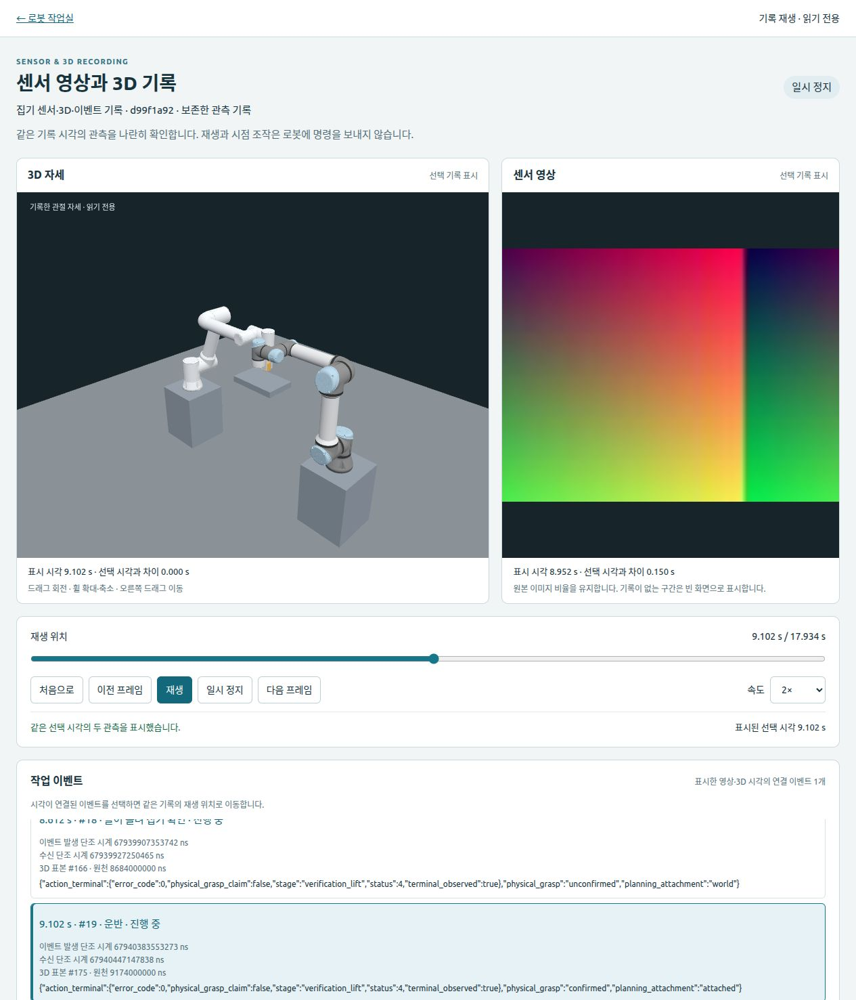
좁은 화면과 이벤트 전용 기록
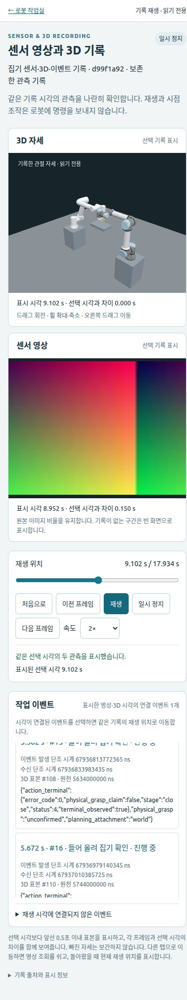
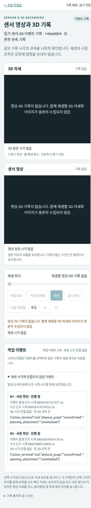
첫 수동 검사에서는 감시 스크립트가 존재하지 않는 필드를 조회해 이미지 발행자를 시작하지 못했습니다. 그 이벤트 전용 원본을 보존하고 별도 수동 수집·재생 결과와 구분했습니다. 2026년 11월 10일 PR #89·#90으로 main 90171c8에 반영했습니다. 필수 CI #182의 6개 검사와 Pages #30 배포를 마쳤고, 공개 파일 156개의 원본 바이트를 대조했습니다. 운영 뷰어에서도 정상 집기·기록·재생과 소유 프로세스 정리를 확인했습니다. 실물 휴대폰 검수는 후속입니다.
이미지 시각 오류와 로봇 작업의 분리
소스 9c3a647에서 유효한 영상 수집 뒤 진단 이미지 헤더 한 개의 시각을 0으로 바꾸었습니다. 이미지 입력은 image_stamp_backwards를 보고했고 기록은 clock_reversed로 종료했습니다. 그때 작업 상태는 실행 중이었으며, native는 이후 Action 6개를 성공하고 정상 정리했습니다. 기록에 남은 자세 17개·이미지 4개·이벤트 10개와 오류 원본을 보존했습니다. 이 검사는 영상 입력 한 건을 바꾼 진단이며 /clock 메시지와 제어 명령 주입은 각각 0개였습니다.
Fixed inputs and model expansion / 2026-11-10
고정 입력 비교와 FR16 실행 검증
소스 31c8a28에서 근거리 목표, 고정 기둥 환경, 충돌 목표 거부를 두 탐색 설정으로 각 1회 확인했습니다. 전체 20개 조건 중 6개를 실행했으며, 동작 4건과 예상한 거부 2건을 확인했습니다. 나머지 14개 조건은 실행하지 않았습니다.
ROS 토픽 발행부터 관측까지
single은 계획 후보 1개, bounded는 최대 12개를 사용합니다. 각 조건은 새 시뮬레이터와 별도의 준비 동작으로 시작했습니다. 아래 시간은 같은 기록 프로세스의 monotonic 시계를 사용해 토픽 발행 시작부터 측정했습니다.
| 입력 | 설정 | 결과 | 수신까지 ms | 최초 이동 관측까지 s | 종료까지 s |
|---|---|---|---|---|---|
| 근거리 양팔 목표 | single | 동작 완료 | 0.681 | 1.476635 | 3.794200 |
| 근거리 양팔 목표 | bounded | 동작 완료 | 0.327 | 1.496703 | 3.812743 |
| 고정 기둥 환경 | single | 동작 완료 | 0.317 | 3.174453 | 19.746903 |
| 고정 기둥 환경 | bounded | 동작 완료 | 0.275 | 4.022569 | 27.563417 |
| 충돌 목표 거부 | bounded | 예상한 거부 | 0.279 | — | 0.094922 |
| 충돌 목표 거부 | single | 예상한 거부 | 0.268 | — | 0.096872 |
최초 이동은 관절 상태의 변화가 0.001 rad를 넘은 첫 관측입니다. 목표 거부 두 건에는 이동 관측값이 없습니다. 조건별 표본은 각각 1개이며, 반복 분포와 일반적인 성능 순위는 별도 평가가 필요합니다. 브라우저와 HTTP 구간은 이번 측정에 포함하지 않았습니다.
FR16 실험 프로파일
제조사 FR16 V6 모델을 생성하고 직접 제어와 MoveIt 계획·실행을 확인했습니다. 별도의 이동 중 취소에서는 실행 중인 목표의 취소, 정지 관측, 새 홈 목표의 완료와 소유 프로세스 정리를 순서대로 확인했습니다. 뷰어에서는 FR16 모델을 읽기 전용으로 살펴볼 수 있으며, 통합 작업실의 실행 대상은 FR5·UR5e입니다.
- 정지 관측은 0.410 s 동안 42개 표본을 사용했습니다. 최대 관절 변화는 0.0003152833 rad, 최대 속도는 0.0159116 rad/s였습니다.
- 새 홈 목표의 최대 관절 오차는 0.00110129 rad였습니다.
- 취소 검증의 native 기록은 5,076 / 5,076 단계를 보존했고 종료 검사를 통과했습니다.
정지 판정에는 0.4 s 이상의 관측, 위치 변화 0.002 rad와 속도 0.02 rad/s 이하의 조건을 적용했습니다. 일반 실행 검증은 직접 제어·MoveIt·상태·시계·프로세스 정리를 확인했으며, native 단계 종료 검사는 별도 취소 실행에 적용했습니다. 실물 로봇의 정지 성능과 안전성은 추가 검증 항목입니다.
기존 측정의 입력과 표본은 각 리포트에 보존했습니다. 이번 6조건의 개별 시간과 기존 반복 측정은 별도 결과로 확인합니다. 기존 고정 목표 평가 · WebGL 표시 성능
Block fixtures / 2026-11-10
80 g·120 g 블록의 집기와 취소
소스 31c8a28에서 FR5와 검증용 평행 그리퍼로 두 질량의 단순 블록을 시험했습니다. 질량별로 정상 집기·운반·놓기, 30초 유지 후 완료, 운반 중 취소를 각 1회 실행했습니다. 여섯 조건 모두 해당 완료·취소 조건과 소유 프로세스 정리 검사를 통과했습니다.
| 블록 | 정상 작업 | 유지 관측 | 최대 상대 위치 오차 | 취소 전 이동 관측 |
|---|---|---|---|---|
| 80 g | Action 6개 성공·놓기 확인 | 30.016 s·564개 표본 | 1.305 mm | 5.126 mm 후 Action 취소 |
| 120 g | Action 6개 성공·놓기 확인 | 30.032 s·560개 표본 | 1.617 mm | 5.186 mm 후 Action 취소 |
유지 시간은 native 시뮬레이션 시각으로 계산했습니다. 상대 오차는 그리퍼를 닫았을 때 저장한 기준 자세에서 측정했습니다. 두 유지 실행의 처음 두 표본은 물리 집기 확인 뒤에 관측한 phase3이며, 이후 각각 562개·558개가 phase4입니다. 원래 표본과 시각을 보존했습니다.
운반 중 취소에서는 이동을 관측한 뒤 진행 중인 Action의 취소 상태 5를 확인했습니다. 종료 시 물리 집기는 unconfirmed, MoveIt 부착 상태는 attached로 남았습니다. native 정지 단계에서 세 제어기의 비활성화와 소유 프로세스 정리를 확인했습니다.
물리 관측을 받아들일 때 시계 진행, 관측 나이, heartbeat와 활성 제어기를 실행 코드에서 검사합니다. 유지 표본마다 받은 guard 응답의 원본은 별도로 저장하지 않았습니다. phase8은 시뮬레이션을 고정하는 정지 단계이며, 실물 로봇의 감속·하중·안전성은 추가 검증이 필요합니다. 각 조건의 표본은 1회입니다.
질량·표본·단계 연결과 native 결과 해시 · 검증 소스
다음 검증
이번 짧은 부하 관측을 바탕으로 고정 입력의 반복 수와 실행 범위를 늘립니다. 다른 물체·그리퍼, 시뮬레이션 카메라 입력과 새 로봇의 작업실 실행 연결은 각각 별도 검증을 거칩니다.
센서·기록 부하와 실제 UI 조작
같은 로봇 자세와 화면에서 서버 부하를 관측하고, 같은 목표의 계획 검토·승인·실행을 확인했습니다.
세 조건의 관측 방법
- L0 · 3D 표시
- L1 · 3D 표시와 RGB 수신·JPEG 인코딩
- L2 · 3D 표시와 RGB 수신·JPEG 인코딩·동기 기록
조건마다 새 실행 환경에서 같은 준비 동작을 수행한 뒤 12초 동안 0.5초 간격으로 25개 표본을 수집했습니다. 관측 전후의 실제 자세는 명목 홈 자세와 최대 0.003 rad 이내였습니다. 같은 12관절 목표, 기본 시점과 전체 맞춤, 250ms 조회 설정을 사용했습니다. 화면은 1280×900, DPR 1, 3D 캔버스는 637×280이며 표시된 GPU는 NVIDIA GeForce RTX 3050입니다. 진단 영상은 RGB8 64×48, 발행 10Hz, 서버 인코딩 상한 5Hz입니다.
서버 CPU 관측
CPU 100%는 코어 하나를 모두 사용하는 양입니다. 콘솔 본체에는 HTTP·ROS·JPEG·기록 스레드가 포함됩니다. 명령, 시뮬레이션, 영상 발행 그룹은 각각 구성이 유지된 범위입니다.
| 조건 | 구간 s | 콘솔 본체 | 명령 그룹 | 시뮬레이션 그룹 | 영상 발행 그룹 | 수집기 CPU s |
|---|---|---|---|---|---|---|
| L0 | 12.000 | 20.92% | 21.42% | 15.25% | 미사용 | 0.299 |
| L1 | 11.987 | 25.78% | 21.19% | 15.60% | 10.34% | 0.352 |
| L2 | 12.001 | 29.33% | 20.92% | 15.75% | 10.08% | 0.303 |
세 원본 창 모두 자식 프로세스 구성이 바뀌어 전체 콘솔 그룹 CPU를 계산할 수 없었습니다. 원본 25개 표본은 보존하고 동일한 본체 프로세스만 다시 계산했습니다. 별도 뷰어 작업자, 일시적인 자식, 브라우저 CPU·GPU·VRAM과 전체 애플리케이션 합계는 미측정입니다.
각 조건 1회 관측이므로 차이의 원인 분리와 성능 순위 판단에는 반복 시험이 필요합니다.
입력과 기록의 증가량
| 조건 | RGB 수신 | JPEG 인코딩 | 기록 자세 증가 | 기록 영상 항목 증가 |
|---|---|---|---|---|
| L0 | 미등록 | 미등록 | 0 | 0 |
| L1 | 120 | 60 | 0 | 0 |
| L2 | 119 | 59 | 82 | 60 |
입력 계수는 앞뒤 HTTP 조회 구간의 차이이며 CPU 구간과 경계가 다릅니다. 조작 화면에서는 센서 영상 패널이 숨겨져 있어 서버 수신·인코딩·기록 부하를 관측했습니다. L2 기록은 관측 창 뒤 UI에서 종료했고, 이후 계획 검토와 동작 실행을 진행했습니다.
완료된 v1 기록에는 자세 259개, 영상 항목 188개, 중복을 공유하는 JPEG 파일 128개가 남았습니다. 기록 길이는 38.034초이며 종료 사유는 user_stop입니다. 원본과 영구 보존 사본의 파일별 크기와 SHA-256이 일치합니다.
관측 창 뒤의 작은 동작 실행
계획을 확인하고 승인한 뒤 실제 /api/plan/execute 요청을 보냈습니다. 아래 세 행은 각 조건의 고정 목표 실행 한 건입니다.
브라우저 페이지의 경과 시간
| 조건 | ACK ms | 첫 일치 상태 ms | 종료 상태 ms | 결과 |
|---|---|---|---|---|
| L0 | 12.5 | 621.5 | 4871.8 | 성공 · Action 2개 · 정착 확인 |
| L1 | 13.4 | 646.6 | 4897.0 | 성공 · Action 2개 · 정착 확인 |
| L2 | 10.2 | 624.6 | 4874.0 | 성공 · Action 2개 · 정착 확인 |
브라우저 POST 시작부터 JSON 응답 완료와 폴링으로 받은 상태까지의 시간입니다. 화면 픽셀이 표시된 시각과 실제 움직임 시작 시각은 별도 항목입니다. 읽기 전용 검토 요청의 시간은 제외했습니다.
서버 HTTP 수신부터의 경과 시간
| 조건 | 명령 수신 ms | 첫 동작 s | 정착 s | 종료 s |
|---|---|---|---|---|
| L0 | 36.915 | 2.500 | 4.810 | 4.826 |
| L1 | 33.535 | 2.470 | 4.780 | 4.794 |
| L2 | 38.843 | 2.478 | 4.798 | 4.812 |
프로세스 소유 관계와 같은 호스트의 단조 시계를 독립적으로 확인한 뒤 원본 요청 기록을 연결했습니다. 브라우저와 서버의 경과 시간은 각 시계에서 따로 계산했습니다. L0 브라우저 수치는 별도로 보존된 화면 내보내기에서 확인했습니다.
취소와 집기 UI 확인
별도의 이동 중 취소 요청은 cancelled로 끝났습니다. 취소 ACK는 11.5ms, 서버의 취소 HTTP 수신부터 종료까지는 0.530초였습니다. 원본 명령 수신부터 종료까지는 3.413초입니다. 실제 물리 정지 시각은 원본에 없어 미측정으로 남깁니다.
새 80g 블록 집기 작업은 접근·닫기·검증 들기·운반·놓기·열기의 Action 6개가 성공했고, 최종 물체는 놓인 상태와 월드 소속으로 확인했습니다. 수집기가 job.id를 조회하다 실제 job_id 필드와 맞지 않아 RGB 발행이 시작되지 않았습니다. 새 기록에는 자세 210개와 이벤트 33개, 영상 0개가 남았으며 미디어 재생은 비활성 상태입니다.
이전에 진단 RGB 입력과 native 3D를 함께 기록한 f059d105… 기록은 별도로 보존했습니다. 해당 기록은 자세 250개, 영상 79개, 이벤트 33개이며 새 80g 시험과 수집 시점이 다른 관측입니다.
실제 PC·모바일 검수 화면
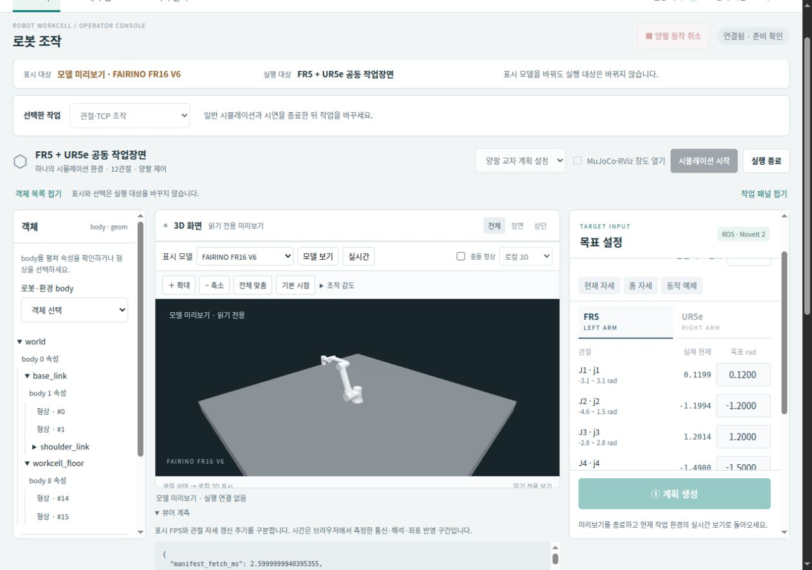
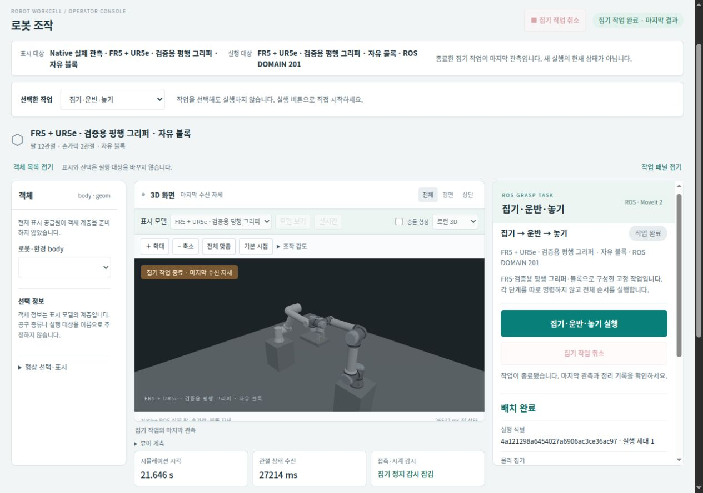
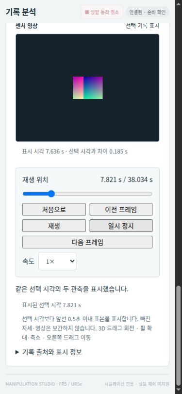
화면 크기와 남은 확인
FR16은 모델 표시와 전환 화면을 확인했습니다. 390×844 브라우저 뷰포트에서 문서 너비는 375px이었고, 읽기 전용 재생 중 새 명령은 생성되지 않았습니다. 실제 휴대폰, 브라우저 전체 CPU·GPU, 실제 표시 지연과 물리 정지 시각은 후속 확인 항목입니다.
후속 반복 시험에서는 센서 영상의 브라우저 표시 부하와 더 긴 기록, 다양한 로봇·물체·작업 환경을 별도 조건으로 늘릴 수 있습니다.
원본 연결
원본 창의 계산 불가 결과, 25개 표본, 별도 계산과 요청·시계 검증 파일의 크기 및 SHA-256을 관측·시계·원본 연결에 담았습니다.
31c8a2857b0335249f0154dee3f7a7ab079ba5c2
8933 통합 작업실에 연결한 기능
시작 설정에서 모델·해시·전용 ROS 도메인을 고정합니다. 선택한 작업에서 관절·TCP 조작 또는 집기·운반·놓기를 고르며, 선택만으로 실행하지 않습니다. 집기는 FR5·검증용 평행 그리퍼·단순 블록의 전체 순서입니다.
실행·상태·취소
- 같은 작업 패널에서 시작하고 접근·집기 확인·운반·놓기·정리를 확인합니다.
- 물리 집기, MoveIt 부착, Action 종료, 제어기 정지와 소유 프로세스 정리를 구분합니다.
- 활성 작업이나 정리 미확인이 있으면 전환·새 실행을 막습니다. 취소 뒤 자동 놓기·부착 해제·재실행을 하지 않습니다.
- 작업 선택 세대가 바뀌면 이전 창의 명령과 늦은 상태·3D 자세를 재사용하지 않습니다.
3D와 기록 분석
- 일반 양팔 모델과 native 3.12의 그리퍼·자유 블록 모델을 같은 표시부에서 전환합니다.
- 종료 후 마지막 자세와 실제 수신 중인 관측을 구분합니다.
- 명시적으로 가져온 센서·3D 보존 기록을 같은 분석 패널에서 재생·탐색합니다.
- 원래 수집 시각·누락을 유지하고, 기록을 바꾸거나 화면을 떠나면 해당 표시 자원을 정리합니다.
기록의 범위: 대표 입력은 자세 41개·합성 RGB 이미지 18개의 기존 진단 기록입니다. 새 집기 실행의 RGB 센서 수집이나 실제 카메라의 하드웨어 동기화를 확인한 결과는 아닙니다. 기존 0.5초 관측 나이, 150 ms 집기 관측 간격과 물리·접촉·소유 프로세스 정리 기준을 유지합니다.
같은 소스에서 확인한 대표 조건
통합 구현과 아래 실제 ROS 세 조건의 기준은 fd6cebc입니다. 이전 732413f의 통과 기록은 검증 JSON에 별도 이력으로 보존합니다.
통합 소스 fd6cebc에서 실제 HTTP를 통해 다음 세 조건을 순차 실행했습니다. 각 결과의 실행·모델·원본 해시와 소유 프로세스 정리를 확인했습니다.
- 정상: 집기·운반·놓기 후 물리 해제와 MoveIt world 객체 복귀를 확인했습니다. 일반 조작으로 돌아와 시뮬레이션 시작·계획 생성·검토·폐기·종료를 확인했습니다. 이 회귀에서 그 계획을 승인·실행한 것은 아닙니다.
- 시작 중 취소: native 실행 전에 취소해 Action 목표 0개와 검사 프로세스 정리를 확인했습니다. native가 시작되지 않았으므로 제어기의 물리 정지를 관측한 결과로 표시하지 않습니다.
- 운반 중 취소: 실제 물체가 5 mm 이상 움직이고 물리 집기·MoveIt 부착을 확인한 뒤 취소했습니다. 정지 감시와 세 제어기의 비활성, native·작업·검사 프로세스 정리를 확인했습니다. 취소 뒤 현재 물리 집기는 미확인, 계획상 부착은 보존합니다.
단위 검사 전체 1,402개(1개 제외), 모델 검사 전체 91개(1개 제외)와 JavaScript 18개 스크립트의 276개 시나리오를 통과했습니다. 세 실제 검사에는 잘못된 선택 세대·모델·취소 대상 거부와 이전 3D 응답 폐기, 같은 UI의 읽기 전용 재생 검사도 포함합니다.
실패 원본과 수정 범위
첫 시작 중 취소는 Python의 취소 처리 준비 전에 SIGINT가 도착해 종료 코드 -2와 결과 누락으로 실패했습니다. 취소 요청은 즉시 보존하고, 정확한 작업자가 유효한 IPC를 발행한 뒤 신호를 한 번 전달하도록 수정했습니다. 50·57초의 기존 단계적 종료 기준은 유지합니다.
앞선 운반 취소에서는 병렬 검사 중 제조사 저장소의 Git 관리 파일 상태가 바뀌어 파일 식별 검사가 실행을 차단했습니다. 원본을 보존하고 콘솔·작업 프로세스에 읽기 전용 Git 설정을 적용한 뒤 같은 고정 소스에서 순차 검증했습니다. 파일·소스·실행 식별 검사는 유지합니다.
오류 중단과 사용자 취소의 분리
유효한 IPC가 오기 전의 협조적 취소 대기가 오류 중단에도 적용되는 분기를 추가 감사에서 확인했습니다. 잘못된 첫 IPC, 출력·보존 한도, 감시자 오류와 시간 초과는 이 준비 대기를 건너뛰고 정확한 소유 작업자를 즉시 중단하도록 수정했습니다. 사용자 취소·일반 닫기의 준비 대기와 기존 50·57초 단계적 종료는 유지합니다.
준비 중 사용자 취소 뒤 오류가 생기는 경우, 원래 취소 시한 유지, 잘못된 IPC 미수락과 신호 중복 전송 방지를 포함한 단위 검사를 통과했습니다. 결과가 없거나 정리를 확인하지 못한 종료는 성공으로 바꾸지 않습니다. 이 오류 분기 검사는 실제 ROS의 치명적 오류 주입 시험이 아닙니다. 최종 소스에서 정상·사용자 취소 세 조건을 따로 다시 검증했습니다.
검증의 한계: HTTP 응답 시간은 JSON 해석을 포함한 한 호스트의 조회 시간입니다. 화면 FPS·입력부터 제어까지의 지연·취소부터 물리 정지까지의 시간이 아닙니다. 새 UI의 실제 PC·모바일 브라우저 배치와 WebGL 조작·영상 촬영은 브라우저 접근이 비활성화되어 수행하지 않았습니다.
동기 기록 시작 검증 후속
main 후속 CI #157에서는 RGB8 입력의 JPEG 전달을 통과한 뒤, 동기 기록 시작이 같은 명령 실행의 실시간 3D 조건에서 HTTP 400으로 거부됐습니다. 당시 원본에는 명령 세션 누락·바인딩 불일치·시연 작업 중 어느 세부 조건이었는지 구분할 상태가 없습니다.
검증 도구가 자세 준비 여부만 기다리던 부분을 수정했습니다. 현재 명령 세션과 실시간 3D 바인딩이 일치하고, 기록 담당자의 can_start가 참이 될 때까지 조회한 뒤 시작을 한 번만 요청합니다. 입력 발행은 요청 중에도 계속합니다. 실제 기록 시작은 기존 조건을 다시 검사하며, 거부 재시도나 식별자·신선도 기준 완화는 추가하지 않았습니다.
검증 도구 수정 24b11b5에서 실제 ROS 진단 입력을 다시 확인했습니다. 읽기 전용 준비 조회 89회 후 시작 요청은 1회였고, 자세 41개·진단 JPEG 17개와 의도한 이미지 누락 1구간을 보존했습니다. 재생 시각 탐색·프레임 이동과 해시, 입력 재연결 후 명령 자동 재전송 없음, 콘솔 종료 코드 0과 정리를 확인했습니다.
후속 단위 검사는 전체 1,407개 중 1,406개 통과·1개 제외이며, 관련 검사 20개와 소스·wheel 패키징도 통과했습니다. 이는 로컬 검증 결과입니다. 위 통합 집기 세 조건과 단위 검사 1,402개의 기존 근거는 그대로 보존합니다. 이번 입력도 합성 RGB이며, 집기 실행의 RGB 수집·실제 카메라·물리 적분 단계 정렬·화면 성능을 검증한 결과는 아닙니다. 첫 CI 실패와 후속 검증 근거
비교 시연의 준비 완료 후 취소 검증
후속 CI #159에서는 비교 시연의 활성 접근 중 취소가 실패했습니다. 오른팔 제어기가 활성화되고 Action을 수락한 뒤에도 시작 도우미인 spawner가 종료되지 않은 상태였으며, 소유 실행에 보낸 SIGINT로 해당 spawner가 -2로 종료됐습니다. 핵심 제어기와 프로세스 그룹이 정리됐어도 자식 종료가 정상은 아니므로 기존 실패 판정을 보존합니다.
검증 도구가 현재 소유 실행의 경로·도메인·시작 시각·프로세스 식별자를 확인하고, 세 spawner의 역할별 시작·활성화·같은 PID의 정상 종료를 모두 관측한 뒤 취소하도록 준비 조건을 명확히 했습니다. 파일을 읽은 후에도 같은 실행의 신선한 미접촉 접근 상태와 양팔 제어기 활성 여부를 다시 확인합니다. 실제 제품의 중단 시점, 취소 처리와 -2 종료 분류는 바꾸지 않았습니다.
검증 도구 수정 46093a4에서 접촉·출발 시점 비교와 준비 완료 후 활성 접근 중 취소를 실제 ROS로 순차 검증했습니다. 세 도우미의 정상 종료를 확인한 뒤 취소했으며, 해당 자식 실행은 DemoCancelled로 중단되고 종료 실패 없이 launch 종료 코드 0과 프로세스 그룹 정리를 확인했습니다. 관측한 접근 상태를 실제 변위 측정 결과로 해석하지 않습니다.
관련 검사 40개, 전체 단위 검사 1,412개 중 1,411개 통과·1개 제외와 소스·wheel 패키징을 확인했습니다. 이 결과는 로컬 검증이며, 앞선 RGB 후속 근거와 통합 집기 원본은 유지합니다. 초기화 도중 임의 시점에 비교 시연을 취소하는 수명 주기 문제는 아직 해결하지 않았으며 별도 후속 작업으로 남깁니다. 이번 검증에서 물리 변위·브라우저 표시·모든 취소 시점을 확인한 것은 아닙니다. 원본 실패와 준비 완료 후 취소 근거
새 통합 UI의 동작 영상은 아직 추가하지 않았습니다. 화면 파일이 동일한 이전 688dd4b에서 정적 모듈 13개와 보존 기록의 manifest·자산·JPEG 응답을 확인했으며, 이미지 해시·디코드와 로봇 작업 미시작을 확인했습니다. 이는 브라우저 렌더 검수와 다릅니다. 아래 여섯 영상은 이전 화면의 기록으로 유지합니다.
복구 수정과 실행 자료 보존
복구한 실행 환경과 중요 자료를 프로젝트 폴더 안에 정리했습니다. 작업 선택 뒤 상태를 갱신하는 화면 코드와 실행 로그의 보존 경로를 함께 수정했습니다.
브라우저 작업 전환
- 작업 선택 뒤 사용하는 타이머를 브라우저의 전역 함수로 호출해 타이머 수신 객체 오류를 수정했습니다.
- 서버에서 현재 작업 상태를 갱신한 뒤 조작 화면을 열어 이전 작업의 3D 표시 연결이 다시 사용되는 문제를 수정했습니다.
프로젝트 내부 기록
- 환경 스크립트와 이를 다시 불러오는 자식 프로세스의 ROS 로그를 프로젝트의
runtime/ros-logs/에 기록합니다. - 설치 환경 검사별
checker.log와receipt.json을runtime/validation/environment-checks/아래 고유 폴더에 보존합니다. 성공과 실패의 근거를 각각 남깁니다. - 개발 작업 트리, 실행 환경, 검증 결과와 영상·센서 기록은 프로젝트 안에 보존하고,
/tmp에는 재생성할 수 있는 휘발성 자료만 둡니다.
로그인 후 뷰어 시작
실행 스크립트 start-viewer.sh는 조작 화면의 표준 시작 인수를 받습니다. 집기를 사용할 때에는 준비한 실행 환경, manifest SHA와 전용 ROS 도메인을 함께 지정합니다. 운영 호스트에서는 이 명령을 사용자 서비스로 등록해 로그인 후 뷰어 서버를 시작할 수 있습니다. 시뮬레이션과 작업은 화면에서 사용자가 시작합니다.
11월 2일에는 프로젝트 내부로 옮긴 실행 환경에서 실제 ROS 정상 완료, 시작 중 취소, 운반 중 취소의 세 로컬 검증과 데스크톱 3D 표시를 확인했습니다. 11월 4일 사용자 서비스의 등록과 접속을 확인했고, 11월 9일에는 재부팅 뒤 자동 시작과 서버 응답을 확인했습니다.
집기 시작 중 취소 후속
복구 수정의 main 승격 CI #165에서는 집기 시작 중 취소 후 정리 검사가 실패했습니다. MoveGroup이 초기화 중 SIGINT를 받은 뒤 무효화된 ROS context에서 publisher를 만들다가 rclcpp::exceptions::RCLError와 종료 코드 -6으로 중단됐습니다. 같은 실행에서 native 제어 노드는 정상 종료했고 세 궤적 제어기의 정지도 관측했습니다. 이 실패 원본을 보존했습니다.
수정 소스 b02eb57은 첫 Action 전 취소에서 phase 8과 native 정지를 먼저 요청합니다. 같은 소유 MoveGroup의 초기화 완료 메시지, 필수 서비스와 신선한 정지 상태를 확인한 뒤 ROS launch에 종료 신호를 보냅니다. native 정지와 초기화 대기는 8초 예산을 공유하고 증거를 받아들일 때에도 시한을 다시 검사합니다. 예상 외 자식 종료와 확인되지 않은 정리는 실패로 기록합니다.
수정 소스에서 실제 ROS 정상 완료, 30초 시뮬레이션 집기 유지 후 완료, 시작 중 취소와 운반 중 취소의 네 로컬 검증을 통과했습니다. 같은 작업실의 HTTP 경로에서도 정상·시작 중 취소·운반 중 취소의 세 검증과 일반 조작 복귀, 소유 프로세스 정리를 확인했습니다. 집중 단위 검사 69개와 전체 단위 검사 1,435개(1개 제외), 모델 검사 91개(3개 제외), 패키지 빌드도 통과했습니다.
첫 30초 유지 검사는 병행 모델 검사 중 제조사 저장소 관리 파일의 식별 정보가 달라져 입력 검사에서 실패했습니다. 해당 원본을 보존하고 모델 검사 뒤 새 실행에서 30초 유지와 운반 중 취소를 순차 검증했습니다. 이 검사 일정 문제와 CI #165의 MoveGroup 초기화 실패를 별도로 기록했습니다. 비교 시연의 임의 초기화 시점 취소와 과거 간헐 지연 진단, 통합 UI의 전체 PC·모바일 검수는 작업목록에 남아 있습니다.
별도 진단에서는 MoveGroup 생성자에 시험용 3초 지연을 넣고 같은 초기화 경계에서 취소했습니다. 이전 소스는 종료 코드 -6 실패를 재현했고, 수정 소스는 native 정지와 초기화 완료를 확인한 뒤 종료 신호를 보내 정상 정리했습니다. 이 지연 시험은 원인 비교용으로 수행했으며, 사용한 런타임 가드는 시험 뒤 원본 해시로 복원했습니다.
공동 작업 환경의 시작 실패 후속
main 승격 CI #167에서는 왼팔 제어기를 설정하던 native 제어 노드가 종료 코드 -11로 중단됐습니다. 접촉 guard의 준비 시간이 초과됐고, 원본 로그에는 종료 신호를 보내기 전의 segmentation fault가 남아 있습니다. 시계 구독의 TimeSource에서 rcl_set_ros_time_override와 타이머의 jump callback으로 이어지는 스택을 확인했습니다.
고정한 ROS 소스에서는 Action 서버가 타이머를 초기화할 때 clock mutex를 잡지 않고, 타이머는 내부 구현 포인터를 채우기 전에 jump callback을 등록합니다. 별도 진단은 실제 라이브러리의 이 등록 직후를 멈추고 같은 clock mutex를 사용하는 시계 갱신을 진행해, 내부 포인터가 빈 상태의 -11 종료를 재현했습니다. 이 진단과 원본 CI 로그를 함께 보존합니다.
수정 소스 7a40943은 rclcpp_action 16.0.21의 Action 서버 초기화와 해제에 같은 clock mutex를 적용합니다. 고정한 소스와 패치를 프로젝트별 prefix에 빌드하고, 일반 단일 로봇·공동 작업 환경과 집기 실행에서 현재 패치와 실제 라이브러리 선택을 검사합니다. 같은 최종 진단 바이너리에서 이전 라이브러리는 -11 실패를 재현했고, 수정 라이브러리는 clock mutex 대기 뒤 내부 포인터가 준비된 상태로 시계를 갱신하고 정상 종료했습니다. 이 결정적 검사는 타이머 초기화를 다루며, 해제는 소스의 잠금 검토와 정상 종료를 확인한 범위입니다.
수정 환경에서 FR5·UR5e 단일 실행 2개, 양팔 교차 1개, 왼팔·오른팔·충돌·회피 비교 4개, 직접 집기 4개와 같은 작업실 HTTP 집기 3개를 순차 검증해 총 14개를 통과했습니다. 관측한 소유 native·MoveGroup 프로세스 22개 표본에서 수정 라이브러리의 사용을 확인했습니다. 전체 단위 검사 1,444개 중 1,443개 통과·1개 제외, 집중 검사 57개와 모델 검사 91개, 소스·wheel 패키지 빌드를 확인했습니다.
이후 CI #168은 Python 검사를 통과했으며, ROS 5개 작업은 runtime 빌드에서 선택 확장 옵션인 --allow-overriding을 인식하지 못해 실패했습니다. 빌드 단계에서 검증이 종료됐습니다. 이 옵션을 빌드 명령에서 제거하고 회귀 검사에 반영한 뒤 표준 runtime 빌드, 집중 검사 57개와 전체 단위 검사 1,444개 중 1,443개 통과·1개 제외를 확인했습니다. 표준 빌드 결과의 패치·라이브러리 해시가 진단에 사용한 수정본과 일치함을 확인했습니다. 호환성 수정 소스 5945635에서 FR5 단일 실행과 같은 작업실의 정상 집기를 추가 검증했습니다. 위 14개 실제 실행은 소스 7a40943의 결과입니다. 보존한 CI #168 빌드 실패
복구 수정의 main 승격이 막혀 이 시작 실패의 진단과 수정을 먼저 진행했습니다. 이 절은 2026-11-09 진단 당시의 근거입니다. 이후 원격 CI와 main 반영·배포, 통합 UI 검수는 아래 11월 9~10일 검수 기록에서 확인합니다. 앞 절의 b02eb57에서 확인한 7개 실제 실행과 단위 검사 1,435개도 당시의 고정된 근거로 유지합니다.
보존한 CI #167 실패 · 시계 잠금과 실행 검사 수정 · Action 서버 16.0.21 소스 · 타이머 5.3.13 소스 · 같은 버전의 시계 갱신 소스
복구 이후 작업 순서
11월 9일에 정한 순서입니다. 1~2번은 아래 검수 기록에 정리한 범위에서 완료했습니다. 3번의 시작 시점 취소는 아래 W01 검증에 정리했으며, 과거 간헐 지연의 원인은 계속 추적합니다.
- 복구 수정의 원격 CI와 main 반영·배포를 완료했습니다.
- 통합 UI의 PC 조작과 모바일 브라우저 배치를 검수하고 새 시연 영상을 기록했습니다.
- W01의 비교 시연 초기화 중 취소와 과거 간헐 지연을 진단합니다.
- 집기 실행의 RGB·3D·작업 이벤트를 같은 기록에 연결합니다.
- 환경·물체·로봇을 확대하고 전체 지연·부하를 평가합니다.
과거 동기 재생의 원본 41자세·18이미지 기록과 후속 41자세·17이미지 기록은 아직 찾지 못했습니다. 보존한 코드·영상·검증 요약과 원본 기록의 복구 여부를 구분하며, 이후 수집하는 자료에는 새 실행 식별자를 부여합니다.
8933 통합 UI 검수와 배포
main 11b2ce9를 운영 뷰어에 적용했습니다. 같은 화면에서 일반 조작의 계획 검토·승인·실행과 집기·운반·놓기를 확인했습니다.
- 실행 중 안내와 실제 취소·정리 중 안내를 구분합니다.
- native 실행 전 취소와 native 정지·종료를 관측한 취소를 구분합니다.
- 정상적인 사용자 취소는 작업 상태와 함께 읽기 쉬운 안내로 표시합니다.
- 작업 전환 후 이전 집기 요청의 상태·오류·식별자가 남지 않도록 초기화합니다.
- 대기 중인 승인과 이미 사용한 일회성 승인을 구분합니다.
수정한 UI에서 정상 집기, 실행 전 취소, 실제 물체 이동 후 취소와 일반 조작의 승인 실행을 확인했습니다. 운영 8933에서도 정상 집기와 native 종료·정리, 작업 전환 후 표시 초기화를 다시 확인했습니다. 모바일 배치는 390 × 844 브라우저 화면으로 검수했습니다.
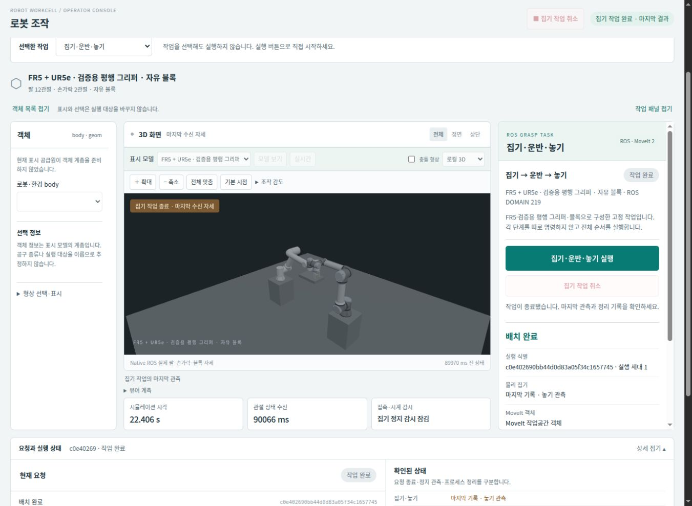
main CI #174의 필수 검사 6개와 Pages 배포 #28을 통과했습니다. 공개 파일 147개·39,074,559바이트를 해당 소스와 대조했습니다. 첫 Pages 시도는 GitHub 파일 동기화 중 작업 시간 제한으로 끝났으며, 원본을 보존한 뒤 배포 작업을 한 번 재실행해 통과했습니다.
실물 휴대폰 검수는 수행하지 않았습니다. 과거 동기 기록 원본 두 건의 복구와 간헐적 종료 지연 원인은 계속 열린 항목으로 관리합니다. 소스·실행·검사·매체 근거
비교 시연 시작 중 취소
수정 전에는 시작 직후 취소가 worker의 종료 코드 -2로 기록됐습니다. 소스 778658e는 취소 요청을 먼저 저장하고, 정확한 작업자의 핸들러 준비를 확인한 뒤 신호를 전달합니다. 첫 취소 요청부터의 45초 기한은 유지합니다.
첫 동작을 보내기 전에 세 controller spawner의 정상 종료와 같은 소유 MoveGroup의 초기화 완료를 확인합니다. 시작 도중 취소는 남은 기한 안에서 준비·정리를 마치고 기존 native 종료 절차를 사용합니다. 비정상 child 종료와 실제 오류의 실패 판정은 유지합니다.
- 시작 직후 취소는 정상 취소로 끝났고, native 실행은 시작되지 않았습니다.
- 실행 소유권 기록 직후 취소는 시작 준비를 확인한 뒤 native 종료와 프로세스 정리를 마쳤습니다.
- 접촉·비접촉 비교와 출발 시점 비교를 각각 두 번의 새 실행으로 검증했습니다.
- 접촉 전 이동 중 취소와 실제 접촉 정지 후 취소를 각각 확인했습니다. 두 경우 모두 다음 비교 조건은 실행하지 않았습니다.
고정한 소스의 실제 HTTP 작업 8개와 native 실행 13개를 확인했습니다. 접촉 후 취소에서는 접촉 4건과 정지 latch를 확인했고, 부모가 worker 종료를 기다린 시간은 해당 실행에서 0.715초였습니다. 집중 검사 120개와 전체 단위 검사 1,462개 중 1,461개를 통과했습니다. 제외된 1개는 별도로 보존하는 FR5 prototype c가 이 작업 트리에 없는 조건입니다.
이 절은 고정 소스의 로컬 검증 기록입니다. 위 시간은 해당 실행의 worker 대기 관측값입니다. 과거 약 45초 지연의 정확한 대기 위치는 계속 미확인 상태이며, 이번 통과를 그 원인의 해결로 판정하지 않습니다. ROS 노드가 없는 정리 분기는 결정적 수명 주기 단위 검사로 확인했고, 실제 조기 취소 실행에서는 ROS 노드가 생성된 상태였습니다. 원본 결과·소스 해시와 확인 범위
동기 기록 원본을 CI에서도 보존합니다
이전 CI #174·#175의 보존 ZIP에 동기 기록 원본 번들이 포함되지 않은 점을 확인했습니다. 검증 도구가 만든 원본은 프로젝트의 runtime/operator에 있었고, CI 보존 대상은 runtime/validation이었습니다.
소스 b1d8b99는 소유 콘솔이 종료된 뒤 원본 JSON·모델 자산·JPEG를 검증 출력의 capture-originals로 복사합니다. 원본과 보존본의 파일 목록·크기·SHA256을 대조하고, 완료 기록의 식별 해시를 다시 확인합니다. 디스크에 남은 부분 실패 파일과 복사 오류 기록도 보존합니다.
실제 ROS 진단 입력으로 자세 31개와 RGB 이미지 17개, 의도한 영상 누락 1구간을 새로 수집·재생했습니다. 새 기록 69d16ca3…의 53개 파일·3,851,836바이트가 원본과 일치했습니다. 명령 재전송 없는 재생, 입력 재연결과 콘솔 종료·정리도 확인했습니다. 관련 검사 55개와 전체 단위 1,476개 중 1,475개를 통과했고, 별도 FR5 prototype c가 없는 1개는 제외했습니다.
이 절은 새 소스의 로컬 검증 기록입니다. 과거 로컬 원본 두 건은 미복구 상태로 유지하며, 이전 CI에서 빠진 원본의 복구 여부도 구분합니다. 이번 RGB는 진단 패턴 입력이며 카메라 보정·하드웨어 동기화·동일 native step 정렬은 검증하지 않았습니다. 원본 보존과 새 검증 근거
조사 시점별 뷰어 목록
기존 여섯 행은 11:25의 TCP 수신 포트·설정·상태 확인입니다. 마지막 8933은 이후 통합한 별도 항목입니다. 아래 주소는 촬영 호스트의 로컬 주소이며, 공개 사이트 방문자에게 서버 접속을 제공하는 주소는 아닙니다.
| 화면·포트 | 주요 기능 | 실행 환경 | 확인 시점·상태 | 동작 영상 |
|---|---|---|---|---|
이전 통합 뷰어 8897http://127.0.0.1:8897/ | 양팔 관절 목표, 계획 검토·승인·실행·취소, 접촉·타이밍 비교 | ROS 도메인 164 | 웹·물리 시뮬레이션 실행 중, 진행 중 요청 없음 | 영상 1 |
개발 검증용 통합 뷰어 8923http://127.0.0.1:8923/ | 관절·TCP Pose 목표, 계획 검토·실행, 비교 시연 | ROS 도메인 224 | 웹 대기, 물리 시뮬레이션 정지 | 영상 2 |
독립 집기 실험 8924http://127.0.0.1:8924/ | 검증용 그리퍼·블록의 접근·집기·운반·놓기 | Python MuJoCo 3.14 · 로컬 DLS ROS·MoveIt 미사용 | 웹 대기, 최근 작업 완료·실행 작업자 없음 | 영상 3 |
새 작업실 GUI 8925http://127.0.0.1:8925/ | 객체 목록·3D·작업 패널, 관절·TCP 목표, 계획 검토·기록 분석 | ROS 도메인 225 | 웹·물리 시뮬레이션 실행 중, 진행 중 요청 없음 | 영상 4 |
동기 기록 재생 8929http://127.0.0.1:8929/ | 센서 이미지와 3D 자세를 같은 기록 시각으로 탐색·재생 | 읽기 전용 · ROS 미사용 | 재생 서버 실행 중, 로봇 명령 전송 없음 | 영상 5 |
ROS 집기 전용 8930http://127.0.0.1:8930/ | FR5 집기·운반·놓기·취소, 물리 집기·MoveIt 부착·정리 상태 | native MuJoCo 3.12 · ROS 도메인 222 | 웹 대기, 최근 작업 완료·실행 작업자 없음 | 영상 6 |
통합 작업실 8933http://127.0.0.1:8933/ | 관절·TCP와 고정 집기 선택, 같은 3D·상태·취소, 기록 분석 | 일반·집기 ROS 도메인을 각각 명시 | 구현 fd6cebc · 일반 조작 대기 · 대표 3조건 로컬 검증 | 통합 반영과 검증 |
8897과 8925는 조사 시점에 물리 시뮬레이션도 실행 중이었습니다. 8923·8924·8930의 웹 서버 대기를 로봇 동작 중으로 해석하지 않습니다. 조사 원본에서 호스트 경로·프로세스 식별자·인증 정보를 제외한 공개 운영 목록을 제공합니다.
기존 여섯 뷰어의 동작 영상
각 영상은 해당 화면의 표시와 조작 흐름을 보여주는 기능 기록입니다. 8897·8925는 명령을 보내지 않는 계획 미리보기, 8923은 정지 상태의 화면 조작, 8924·8930은 새 물리 시뮬레이션 실행, 8929는 합성 검증 기록의 재생입니다. 브라우저 화면을 간격을 두고 수집해 영상으로 구성했으며 반복 프레임이 포함됩니다. 영상 길이나 인코딩 속도를 뷰어 FPS·로봇 속도의 비교값으로 사용하지 않습니다. 촬영 방법과 구분은 촬영 근거에서 확인합니다.
8897 · 홈 경로 미리보기
기존 통합 화면에서 홈 목표의 계획을 만들고 0.25배속으로 미리 봅니다. 실행 승인은 하지 않아 실제 ROS 목표를 보내지 않았습니다. 촬영 후에는 계획을 폐기하고 실시간 표시로 돌아왔습니다.
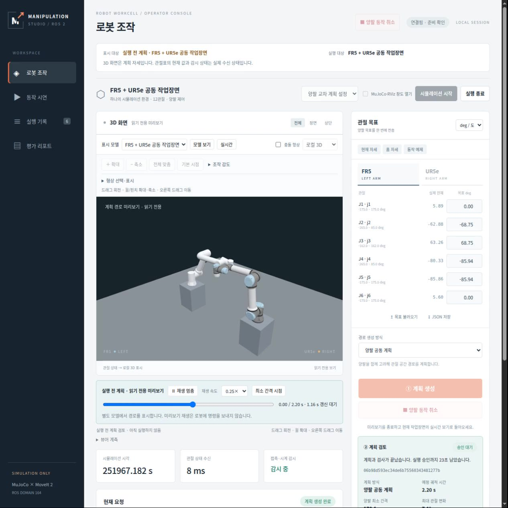

8923 · 정지 상태에서 모델과 입력 확인
물리 시뮬레이션을 시작하지 않고 FR3 모델을 선택해 상단·정면 시점으로 전환합니다. TCP 목표 입력 패널도 확인합니다. 화면 조작 영상이며 로봇 경로의 실행 기록은 아닙니다.
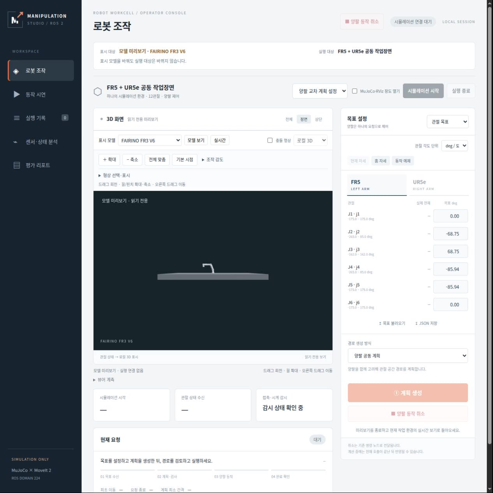

8924 · 독립 물리 집기 실행
Python MuJoCo 3.14와 로컬 DLS로 고정 집기 작업을 새로 실행한 화면입니다. 그리퍼와 블록의 물리 동작을 표시하며, ROS Action이나 MoveIt 부착 상태는 사용하지 않습니다.
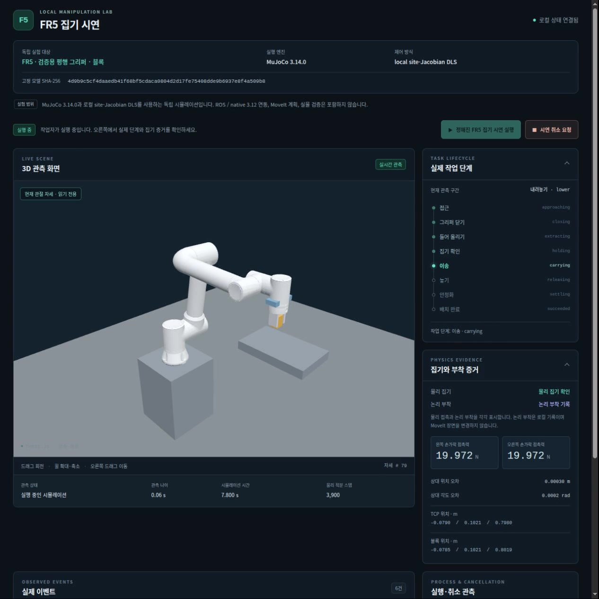

8925 · 작업실에서 동작 예제 미리보기
새 작업실 GUI에서 동작 예제 목표의 계획을 만들고 0.25배속으로 미리 봅니다. 객체 목록과 3D 화면을 유지한 채 계획을 확인하며, 실행 승인은 하지 않았습니다. 촬영 후에는 계획을 폐기하고 실시간 표시로 돌아왔습니다.
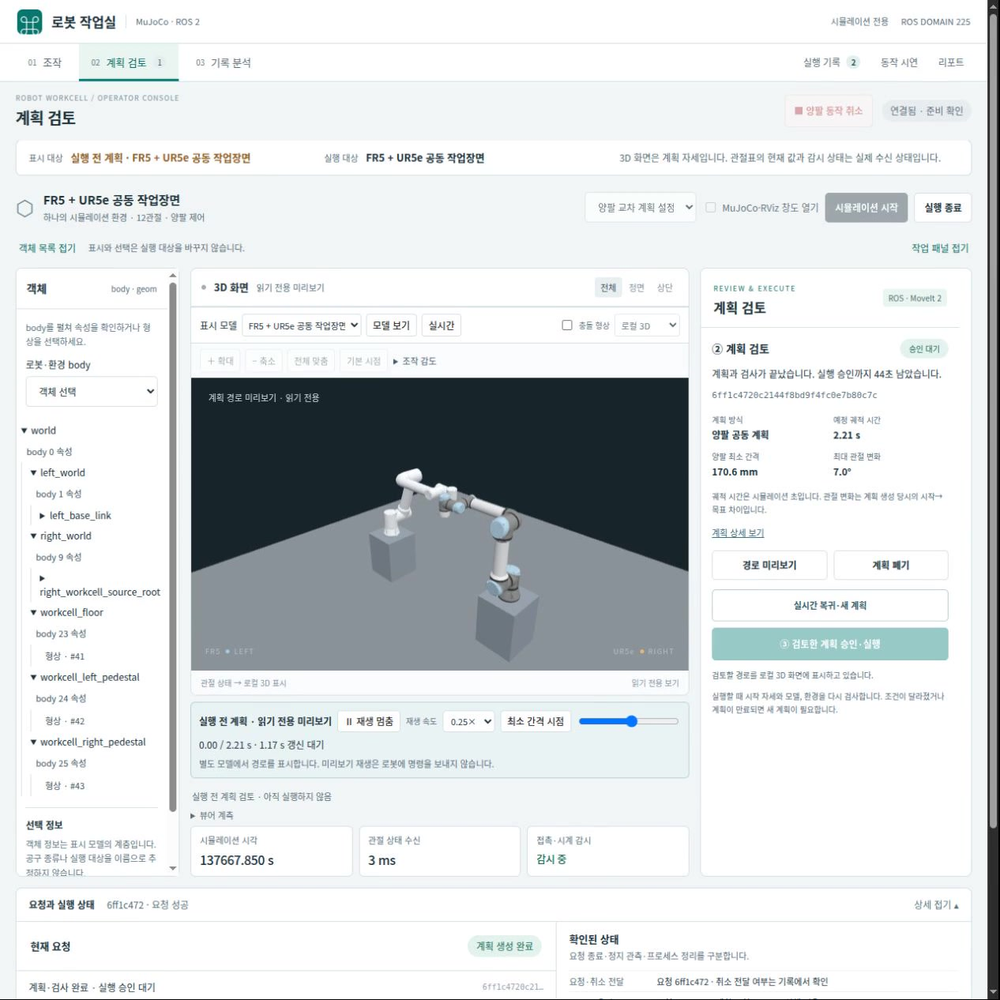

8929 · 합성 이미지·3D 기록 재생
검증용 합성 RGB 진단 이미지 18장과 3D 자세 41개를 공통 기록 시각으로 재생하고, 이전·다음 프레임을 탐색합니다. 명령을 전송하지 않는 읽기 전용 동작입니다. 실제 카메라의 시간 동기화나 보정을 검증한 영상은 아닙니다.
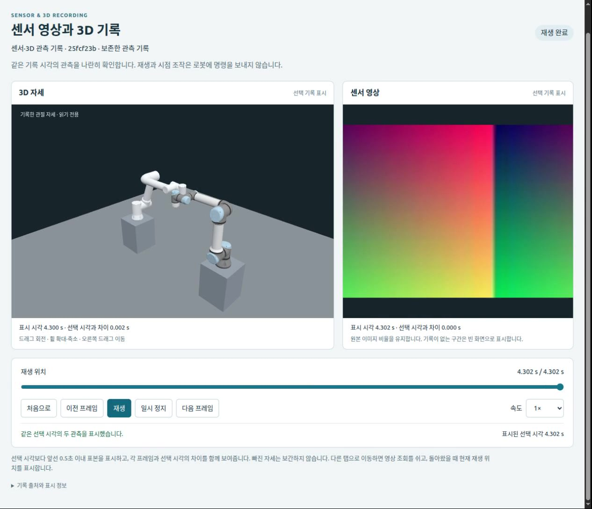

8930 · ROS 집기·운반·놓기 실행
native MuJoCo 3.12·ROS·MoveIt 경로에서 새 집기 작업을 실행한 화면입니다. FR5와 검증용 평행 그리퍼가 블록을 옮기며, 물리 집기와 MoveIt 장면의 부착을 구분해 표시합니다. 촬영한 작업은 배치 완료와 native 종료·소유 프로세스 정리까지 확인했습니다. 실제 ROS 관측을 사용하는 시뮬레이션이며 실물 로봇 영상은 아닙니다.
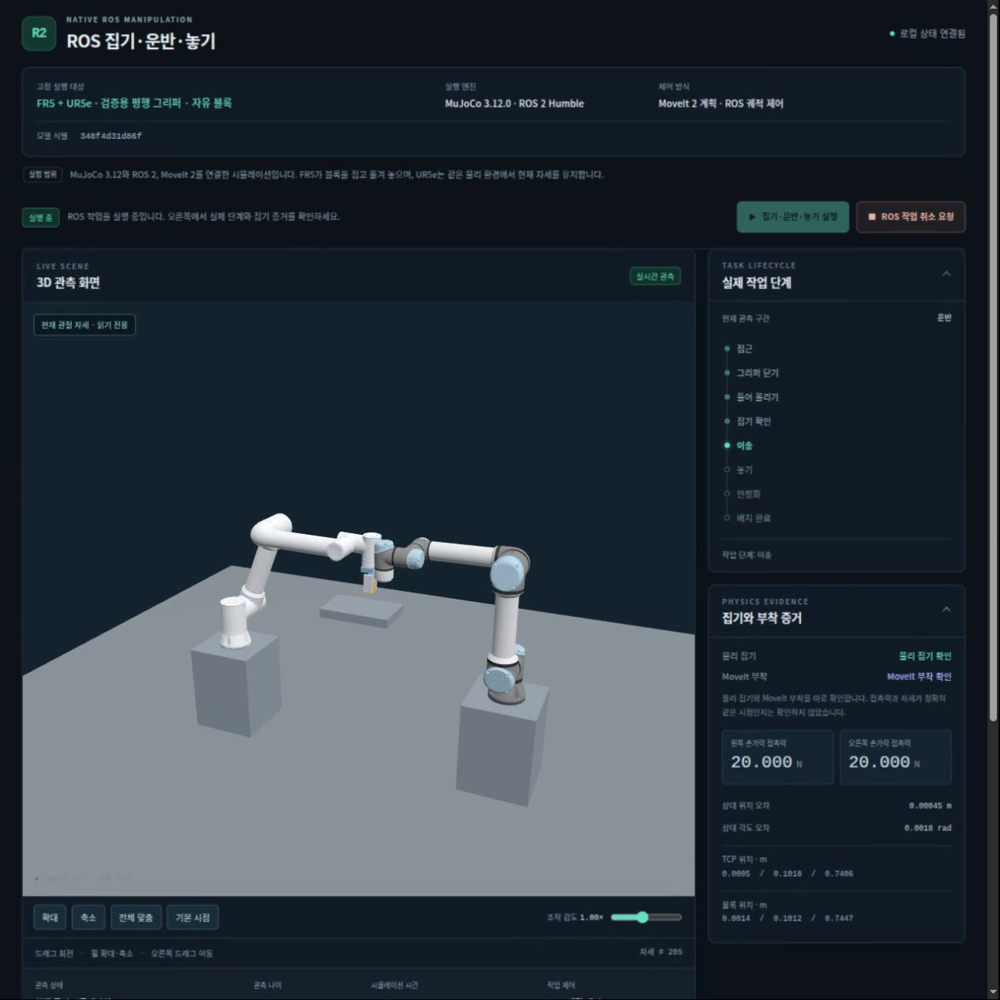

8924의 독립 실험과 8930의 ROS 집기는 서로 다른 실행 경로입니다. 한쪽의 성공 영상을 다른 쪽의 연동 검증으로 대신하지 않습니다. FR5·검증용 평행 그리퍼·블록의 대표 사례이며 임의 물체나 실물 집기 성능을 뜻하지 않습니다.
기능과 실행 범위 비교
아래에서 두 화면을 선택해 차이를 확인할 수 있습니다. 비교 기능은 문서의 정적 표만 사용하며, 로컬 서버에 접속하거나 명령을 보내지 않습니다.
| 비교 항목 | 8925 | 8933 |
|---|
전체 기능표
기존 여섯 열은 11:25 조사 상태이며 8933은 통합 소스의 추가 기능입니다. 구현과 운영 설정을 대조한 정성 비교입니다. 지원 기능은 실제 촬영에서 실행한 동작의 수나 성능 순위를 뜻하지 않습니다. 모바일에서는 표를 가로로 이동할 수 있습니다. JavaScript를 사용하지 않아도 이 표 전체를 읽을 수 있습니다.
| 비교 항목 | 8897 · 이전 통합 | 8923 · 개발 검증 | 8924 · 독립 집기 | 8925 · 새 작업실 | 8929 · 동기 재생 | 8930 · ROS 집기 | 8933 · 통합 작업실 |
|---|---|---|---|---|---|---|---|
| 주된 사용 목적 | 양팔 목표·계획 조작 | 개발 기능 검증 | 독립 물리 집기 실험 | 객체·계획·기록 작업실 | 센서·3D 기록 분석 | ROS 물리 집기 실행 | 관절·TCP·ROS 집기·기록 분석 |
| 3D 시점 조작 | 회전·이동·줌 | 회전·이동·줌 | 회전·이동·줌 | 회전·이동·줌 | 회전·이동·줌 | 회전·이동·줌 | 회전·이동·줌 |
| 관절·TCP 목표 입력 | 관절 목표 | 관절·TCP Pose 목표 | 고정 집기 순서 | 관절·TCP Pose 목표 | 입력·실행 없음 | 고정 집기 순서 | 관절·TCP 목표와 고정 집기 작업 선택 |
| 일반 계획 검토·승인 | 지원 | 지원 | 해당 없음 | 지원 | 기록 탐색만 지원 | 고정 작업 내부 단계 | 관절·TCP 작업에서 지원 |
| 접촉·타이밍 비교 시연 | 지원 | 지원 | 해당 없음 | 지원 | 명령 재실행 없음 | 해당 없음 | 관절·TCP 작업에서 지원 |
| 집기·운반·놓기 | 일반 조작에 없음 | 일반 조작에 없음 | 독립 MuJoCo 실험 | 일반 조작에 없음 | 실행 없음 | native ROS·MoveIt 연결 | 같은 작업 패널의 native ROS 실행 |
| 객체 목록·작업 패널 | 기존 형상 선택 도구 | 기존 형상 선택 도구 | 집기 전용 패널 | body·geom 목록과 작업실 배치 | 재생 전용 패널 | 집기 전용 패널 | 일반 모델 객체 목록 · 집기 전용 작업 패널 |
| 센서·3D 공통 시간축 | 통합 동기 재생 없음 | 통합 동기 재생 없음 | 통합 동기 재생 없음 | 통합 동기 재생 없음 | 보존 이미지·자세 동기 재생 | 통합 동기 재생 없음 | 가져온 v1과 새 집기 v2의 이미지·자세·이벤트 재생 |
| ROS·MoveIt 실행 | 양팔 ROS 제어 | 양팔 ROS 제어 | 사용하지 않음 | 양팔 ROS 제어 | 사용하지 않음 | 팔·그리퍼·Planning Scene | 선택한 작업별 ROS 실행·전용 소유권 |
| 집기 화면 이동 링크 | 운영 설정에 미등록 | 운영 설정에 미등록 | 해당 없음 | 운영 설정에 미등록 | 해당 없음 | 별도 전용 화면 | 같은 UI에서 집기 작업 선택 |
새 통합은 별도 화면 링크와 다릅니다. 8933은 시작할 때 고정된 집기 소유자를 작업실에 연결합니다. 일반 관절 목표 입력에 그리퍼 모델을 그대로 대입하거나 두 서버의 상태를 합산하지 않고, 한 번에 선택한 작업만 실행합니다.
표시 성능은 이 영상에서 새로 평가하지 않았습니다. 측정 조건과 기존 원본은 WebGL 뷰어 개선과 표시 성능에, 계획 방식의 대표 비교는 W08 플래너·캐시 비교에 유지합니다.
향후 통합 순서
기존 실행 경로와 정지 기준을 유지하며 아래 순서로 연결했습니다. 현재 구현·대표 검증과 추가 센서·반복·브라우저 평가를 구분합니다.
1 · 진입점 연결
기준 화면과 별도 화면의 위치 정리
- 8933 작업실에 일반 조작·ROS 집기 선택과 보존 기록 분석을 연결했습니다. 이전 여섯 서버는 전환 기간에 유지합니다.
- 화면 이동 링크를 명시적으로 등록하고, 대상 서버가 없을 때 실행 준비 완료로 표시하지 않습니다.
- 포트 대신 모델·작업 종류·코드·실행 환경으로 운영 상태를 식별합니다.
완료 조건
- 운영 기준 주소와 실행 범위를 한곳에서 확인합니다.
- 링크 이동만으로 작업이 시작되지 않으며, 잘못된 대상 주소를 차단합니다.
2 · 대표 조건 검증
통합 UI에서 작업 선택·상태·취소 연결
- 관절·TCP 조작과 집기·운반·놓기의 작업 선택, 준비·실행·실패·완료 표시를 설계합니다.
- 화면을 전환해도 실제 실행 중인 작업과 취소 대상이 바뀌지 않도록 소유권을 연결합니다.
- 요청 취소, 제어기 정지, 프로세스 정리를 따로 확인하고 자동 재실행·놓기를 추가하지 않습니다.
완료 조건
- 한 화면에서 현재 작업과 실행·취소 대상을 명확히 확인합니다.
- 서버·모델·작업 식별자가 바뀌면 이전 명령과 오래된 상태를 재사용하지 않습니다.
- 정상 완료와 시작 중·운반 중 취소를 같은 UI 경로에서 검증합니다.
3 · 3D 공급원 연결
표시 모델과 실행 모델의 대응 연결
- 같은 Three.js 화면에서 일반 양팔 모델과 그리퍼·자유 물체가 포함된 집기 모델을 구분합니다.
- 형상·관절 대응·모델 해시·작업 세대가 현재 실행과 일치할 때만 실제 관측을 표시합니다.
- 과거 완료 자세, 실시간 관측과 계획 미리보기를 구분합니다.
완료 조건
- 집기 작업의 실제 손가락과 블록 자세를 통합 화면에 표시합니다.
- 모델 전환·오래된 관측·연결 단절 때 잘못된 실행 가능 상태를 표시하지 않습니다.
4 · 보존 기록 연결
작업 이벤트와 센서·3D 시간축 연결
- 8929에서 확인한 보존 기록의 공통 시간축을 작업실 기록 분석에 연결했습니다. 2026-11-10에는 집기 실행의 RGB·native 자세·이벤트 v2 기록을 추가하고 실제 세 조건을 확인했습니다.
- 실시간 현재 상태와 선택한 과거 기록의 시각을 분리해 표시합니다.
- 센서 누락·좌표·단위·원래 수집 시각을 유지하고 기록 재생에서 명령을 전송하지 않습니다.
완료 조건
- 실행·집기·접촉 이벤트를 같은 기록 시각의 이미지와 자세에서 확인합니다.
- 탐색·재생·반복 재생이 실제 작업 명령이나 취소를 발생시키지 않습니다.
5 · 검증·전환 운영
기능 회귀 후 이전 서버 보존 방식 결정
- 관절·TCP, 계획 승인, 집기, 취소·오류·재연결과 읽기 전용 재생을 대표 입력으로 확인합니다.
- 동일 조건에서 화면 응답과 자원 사용을 평가하고 기존 성능 원본과 구분합니다.
- 기존 여섯 서버와 소스·설정·영상은 전환 기간에 유지합니다. 새 UI의 실제 브라우저·반복 검수 후 상시 유지할 서버를 결정합니다.
완료 조건
- 기준 UI의 필수 회귀와 배포 검사를 통과합니다.
- 종료할 서버의 소유권과 재실행 방법을 확인한 후 운영 목록을 갱신합니다.
- 기존 자료와 실패 원본을 보존합니다.
확인 범위와 남은 검증
- 운영 조사
- 2026-10-30 11:25 KST의 포트·설정·상태를 확인한 기록입니다. 상시 상태 감시 서비스가 아니며, 영상 촬영 시각과 실행 조건은 별도 근거에 기록합니다.
- 기능 비교
- 현재 화면 코드와 실행 설정에서 확인한 지원 범위를 비교합니다. 이 목록은 모든 기능을 새로 반복 실행했다는 의미가 아닙니다.
- 영상 범위
- 명령 없는 계획 미리보기, 정지 상태의 화면 조작, 새 물리 실행과 읽기 전용 재생을 각각 구분합니다. 같은 입력·같은 자세·같은 하드웨어 조건의 성능 시험으로 사용하지 않습니다.
- 기록 입력
- 8929는 합성 RGB 이미지와 3D 자세로 만든 소프트웨어 검증 기록을 재생합니다. 실제 카메라 보정·하드웨어 시간 동기화와 같은 물리 적분 단계의 동시 관측은 검증하지 않습니다.
- 집기 범위
- FR5·검증용 평행 그리퍼·단순 블록의 대표 사례입니다. 임의 로봇·물체, 실물 제어와 일반 성공률은 별도 검증이 필요합니다.
- 후속 연결·평가
- 고정 집기 작업과 보존 기록 분석을 연결했습니다. 집기 실행의 v2 기록은 새 세 조건 검증에 정리했습니다. 일반 작업 편집, 실제 카메라 입력과 장시간 부하 평가는 후속입니다.
이 리포트의 역할: 기존 여섯 화면의 조사·영상을 보존하면서 새 통합 작업실의 구현과 대표 검증을 덧붙입니다. 과거 전용 화면의 영상이나 브라우저 검수를 새 8933의 결과로 합산하지 않습니다.
방향성·개발 단계와 근거
확인일: 2026-10-30 · 공개 구현 기준: main 54d0557. 운영 중인 각 서버가 시작 시점의 전체 코드를 동일하게 적재했다는 주장은 하지 않습니다.
- 2026-10-30 작업실 통합 검증소스 fd6cebc의 고정된 집기 실행과 취소, 일반 계획 검토 회귀, 보존 기록 재생을 구분합니다. 실제 브라우저 검수와 원격 반영은 로컬 HTTP 검사와 별도입니다.
- 공개 운영 목록여섯 웹 서버의 역할·포트·조사 상태와 집기 연결 여부를 기록합니다. 호스트 경로·프로세스 식별자·인증 정보는 제외합니다.
- 화면별 촬영 근거영상의 출처·조건과 실제 실행 또는 읽기 전용 표시 범위를 연결합니다.
- ROS 집기 화면 연결 방식명시적으로 등록하는 별도 화면 링크와 일반 조작·집기의 도메인·프로세스 분리를 확인합니다.
- 집기 실행과 검증 범위독립 MuJoCo 실험과 native ROS·MoveIt 집기를 구분합니다.
- 통합 개발 작업리스트기존 단계별 완료 조건과 시스템 변경이 큰 후속 과제를 함께 확인합니다.